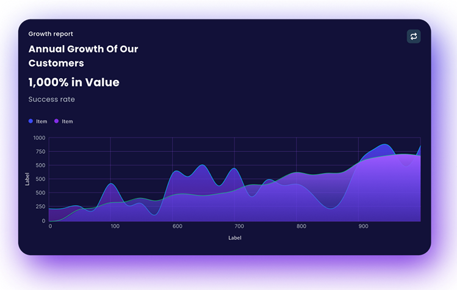

Scale Fintech Seguro e confiável
Controle seu dinheiro com praticidade, segurança e tecnologia. Acompanhe seus gastos, faça pagamentos e gerencie suas finanças em um só lugar.
Saiba MaisControle seu dinheiro com praticidade, segurança e tecnologia. Acompanhe seus gastos, faça pagamentos e gerencie suas finanças em um só lugar.
Saiba Mais

Acompanhe suas movimentações financeiras de forma simples e organizada. Tenha acesso rápido às suas receitas, despesas e saldo em tempo real diretamente pela plataforma.
Visualize gráficos detalhados e relatórios inteligentes para entender melhor seus hábitos financeiros. Com informações claras, fica mais fácil planejar gastos e alcançar seus objetivos.
Gerencie tudo com segurança e praticidade em um ambiente moderno e confiável. A Scale Fintech oferece tecnologia avançada para ajudar você a ter mais controle sobre seu dinheiro todos os dias.

Acompanhe sua evolução financeira com relatórios completos, metas personalizadas e análises de desempenho que ajudam você a crescer com segurança.